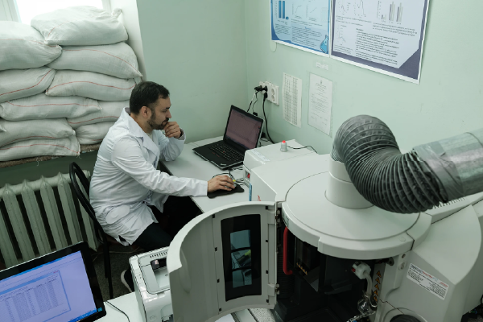
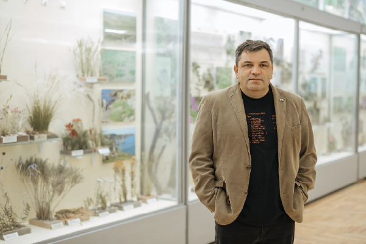
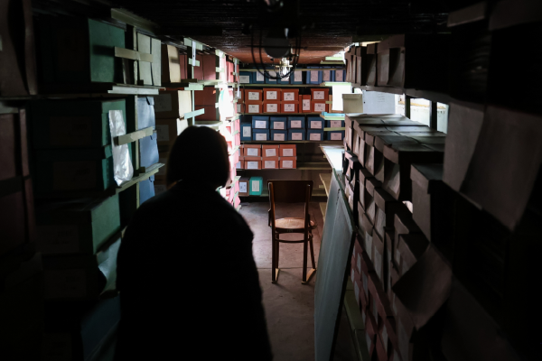
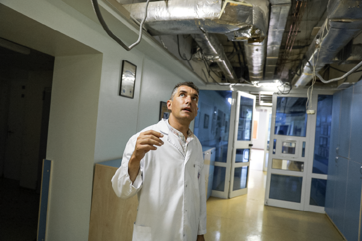
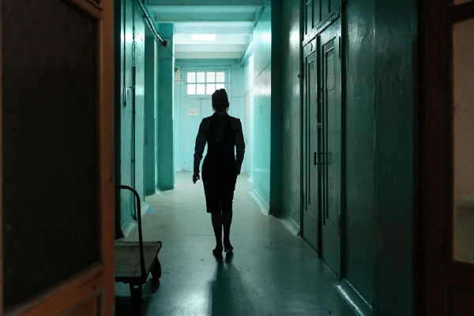

Centre of Excellence on Science at Risk, Ukraine

Stories
The problem of blackouts and power outages in 2022 was the most challenging for the Institute. Due to the voltage drop on February 24, all the crystals that had been growing for a long time had to be discarded.


Stories
Before the full-scale invasion, the State Archive of the Kherson Region housed over 970,000 archival documents. However, as the Russians retreated from the occupied Kherson, they stole a third of the collection.
Stories
With the onset of the full-scale invasion, the institute's material base in Kherson. The fields were mined, and the scientific buildings and laboratories were destroyed by Russian occupiers.

Stories
On the morning of July 8, 2024, a Russian strike damaged the Center for Pediatric Cardiology and Cardiac Surgery, which is located on the territory of "Okhmatdyt," but belongs to the Ministry of Health of Ukraine.

Stories
The scientific building of the Institute of Endocrine Pathology is located in the center of Kharkiv, which has been shelled about ten times during the full-scale war by the Russians.
Mark the scientific field that interests you - find and involve Ukrainian scientists in your own projects
To the full database of scientistsFormalized and organized experience of Ukrainian scientists in the preservation of scientific works, collections and institutions
Show all studies